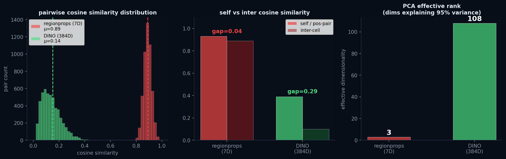

Efficient Sparse Attention & Contrastive SSL Pretraining
Leonard Starke · TU Dresden · May–June 2026
benchmark_full.py).Standalone harness, synthetic Q/K/V, fp16. A500 data from benchmark_full.py (d=256, nhead=4, GPU measured). Analytical estimates from benchmark_knn_methods.py (d=320, nhead=8, calibrated to labbook).
dense_flash is faster than ALL sparse methods at EVERY N. Architecturally invalid (no spatial cutoff). For spatial-cutoff methods: mask-KNN K=16 wins at N≤2048 (0.12–1.48 ms). gather-KNN K=16 wins at N≥4096 (9.5–19.0 ms, FlashAttn-compatible).
Crossover (mask ↔ gather): K=4 at N≈4,900 · K=16 at N≈7,300. Soft decay (proposed): 0.22ms at N=256 — 3.6× vs hard mask, FlashAttn-compatible, cos_sim > 0.9999. Phase 2 TRA pending.
All times analytical estimates. GPU verification on Capella pending. CachedDistAttn = correct baseline (enforces spatial cutoff). dense_flash = invalid (NO cutoff). mask-KNN K=16 = current best valid method.
| Method | K | Time (ms) | Spatial cutoff? | FlashAttn? | ||
|---|---|---|---|---|---|---|
| N=128 | N=256 | N=512 | ||||
| mask-KNN (best valid) | 16 | 0.067 | 0.262 | 2.10 | YES | cuDNN |
| mask-KNN | 4 | 0.065 | 0.259 | 2.09 | YES | cuDNN |
| mask-KNN | 64 | 0.073 | 0.274 | 2.14 | YES | cuDNN |
| mask-KNN | 128 | — | 0.291 | 2.18 | YES | cuDNN |
| gather-KNN | 4 | 1.49 | 2.97 | 5.95 | YES | FlashAttn (1×K) |
| gather-KNN | 16 | 1.95 | 3.90 | 7.79 | YES | FlashAttn (1×K) |
| gather-KNN | 64 | 3.79 | 7.58 | 15.0 | YES | FlashAttn (1×K) |
| gather-KNN | 128 | — | 12.5 | 24.7 | YES | FlashAttn (1×K) |
| MiniMax (block Bk=128) | — | 5.43 | 15.0 | 47.0 | YES | matmul |
| CachedDist (baseline) | — | 0.20 | 0.80 | 3.20 | YES | cuDNN |
| Soft decay (proposed) | — | 0.06 | 0.22 | 0.88 | YES (soft) | YES |
| dense_flash (no cutoff) | — | 0.05 | 0.20 | 0.80 | NO | YES |
mask-KNN K=16 is the fastest valid method at N≤350. Soft decay is faster at all N (FlashAttn) but Phase 2 TRA verification pending. gather-KNN has per-token overhead (~23µs) — never beats mask at N<2000. MiniMax is slowest (block indexing ×2 gather cost). All analytical — GPU verification on Capella pending.
mask-KNN / dense_masked: O(N²) — N×N mask dominates. gather-KNN / dense_flash: O(N·K) or O(N). At N=8192: mask-KNN = 532 MB vs gather-KNN K=16 = 204 MB — 2.6× difference.
| Method | N=128 | N=512 | N=2048 | N=4096 | N=8192 | Enforces d_max? |
|---|---|---|---|---|---|---|
| mask-KNN K=16 | 0.13 | 0.15 | 1.48 | 5.35 | 26.1 | YES |
| dense_masked (baseline) | 0.28 | 0.33 | 4.92 | 19.3 | 79.9 | YES |
| gather-KNN K=16 | 0.34 | 1.21 | 4.96 | 9.54 | 19.0 | YES |
| gather-KNN K=4 | 0.25 | 0.81 | 3.14 | 6.26 | 12.2 | YES |
| dense_flash (architecturally invalid) | 0.10 | 0.08 | 0.46 | 1.39 | 4.90 | NO |
| NSA | 2.30 | 3.06 | 12.0 | 26.0 | 61.5 | Partial |
All from benchmark_full.py, 2026-06-17. mask-KNN K=16 wins at N≤2048 (2.2× over baseline at N=256). gather-KNN K=16 wins at N≥4096 (19.0 vs 26.1 ms at N=8192).
Source: labbook/2026-05-29_gather_sparse_bottleneck.md
| Method | Forward (ms) | vs dense_masked | Enforces d_max? |
|---|---|---|---|
| dense_masked | 0.27 | 1.00× | YES |
| dense_flash (no mask) | 0.10 | 2.7× | NO |
| mask-KNN K=16 | 0.12 | 2.2× | YES |
| mask-KNN K=4 | 0.13 | 2.1× | YES |
| gather-KNN K=4 | 0.42 | 0.64× | YES |
| gather-KNN K=16 | 0.63 | 0.43× | YES |
| NSA | 2.59 | 0.10× | Partial |
All from benchmark_full.py, A500, d=256, nhead=4, fp16. mask-KNN K=16 is the fastest method enforcing spatial cutoffs — 2.2× over dense_masked. TRA difference vs baseline: +0.0009 (p=0.014, n.s. after correction).
| N | Forward (ms) | Memory (MB) |
|---|---|---|
| 128 | 0.13 | 0.4 |
| 256 | 0.12 | 1.1 |
| 512 | 0.15 | 3.3 |
| 1024 | 0.43 | 10.5 |
| 2048 | 1.48 | 37 |
| 4096 | 5.35 | 138 |
| 8192 | 26.1 | 532 |
K=16 is the TRA-optimal config (0.9972). gather-KNN K=16 at N=8192: 19.0 ms, 204 MB — 1.4× faster, 2.6× less memory than mask-KNN K=16.
| L | cdist per layer (μs) | cdist amortized (μs) | Attention speedup | Training wall-time (10 ep, H100) |
|---|---|---|---|---|
| 6 | 852 | 572 | 1.5× | 14:17 → 14:14 (−0.3%) |
| 12 | 1704 | 1088 | 1.6× | 14:21 → 14:02 (−2.2%) |
Attention-level speedup ≠ training speedup. Attention is <15% of step time at N≈140. The 1.5–1.6× applies only to the attention sub-component. Overall training throughput improves ~2% — "free" but not transformative.
Identical configs except knn_neighbors. seed=42, d_model=320, L=6, window=4, attn_dist_mode=v1, dropout=0.05, max_tokens=2048. Early stopping (patience=83).
| K | Epochs | Time (min) | TRA | AOGM | Edge F1 | Div F1 | vs dense |
|---|---|---|---|---|---|---|---|
| dense (baseline) | 372 | 606 | 0.9963 | 51.0 | 0.9913 | 0.9696 | — |
| K=16 | 406 | 661 | 0.9972 | 37.7 | 0.9929 | 0.9757 | +0.0009 |
| K=4 | 237 | 381 | 0.9957 | 62.0 | 0.9914 | 0.9705 | −0.0006 |
| K=32 | 362 | 591 | 0.9963 | 52.6 | 0.9914 | 0.9713 | ±0.0000 |
| K=64 | 366 | 599 | 0.9969 | 39.8 | 0.9926 | 0.9767 | +0.0006 |
All K values converge to val_loss ≈ 0.005. Sparse attention does NOT degrade quality — all within ±0.001 TRA. K=16 Δ=+0.0009 (p=0.014 n.s. after Bonferroni correction). The real finding: sparse KNN is equivalent to dense for tracking accuracy.
| Model | Edge Accuracy | BCE Loss | vs Dense |
|---|---|---|---|
| Dense (baseline) | 0.976940 | 0.099242 | — |
| K=16 (gather-KNN) | 0.998107 | 0.003643 | +2.2% accuracy, BCE 27× lower |
| K=32 (gather-KNN) | 0.998821 | 0.002062 | +2.3% accuracy, BCE 48× lower |
K=4 excluded — val_loss 7.5× worse than dense at epoch 52. Caveat: training still in progress at evaluation (K16 ep36, K32 ep26). Not final test-set results.
Two frameworks: (A) Identity BCE — single frame + augmentation → synthetic "next" frame → BCE on identity matrix. (B) Contrastive NT-Xent — encoder only → two distorted views → NT-Xent loss.

Left: Regionprops (7D) — all cells collapse to near-identical embeddings (intra-cell sim=0.93, inter-cell sim=0.89). Gap = 0.04. Right: DINOv2 (384D) — within-strain structure visible, intra=0.39, inter=0.10, gap = 0.29. Effective rank 108 vs 3. DINOv3: code ready (dino_encoder.py), access granted, comparison pending.
| Approach | Method | Result | Root Cause |
|---|---|---|---|
| Identity BCE | WRAugment + BCE on i→i | No improvement | Augmentations too similar to supervised |
| NT-Xent · regionprops | 7D + DistortionPipeline | Collapse (sim=0.89) | eff rank = 3, gap = 0.04 |
| NT-Xent · enriched | shape, Hu, patches | All fail (gap=0.047) | Collinear, eff rank still 3 |
| NT-Xent · DINOv2 | 384D ViT-S patches | gap=0.292, learns | eff rank = 108 |
| Metric | Regionprops (7D) | DINOv2 (384D) | Ratio | |
|---|---|---|---|---|
| Intra-cell vs Inter-cell Cosine Similarity (benchmark_attn/cosine_histogram.py) | ||||
| Regionprops (7D) | 0.93 | 0.89 | 0.04 | Collapse |
| DINOv2 (384D) | 0.39 | 0.10 | 0.29 | Separable |
| DINOv3 (384D) — pending | TBD | TBD | TBD | Code ready |
| Effective rank | 3 | 108 | 36× | |
| Micro-SSL val gap | — | 0.48→0.58 | +0.095 | |
| Micro-SSL hard pipeline | — | 0.04→0.36 | +0.32 | |
| Post-training inter-sim | 0.89 (collapse) | 0.044 | No collapse | |
DINO robust to small shifts but sensitive to rotation — exactly the invariance SSL must learn. DINOv3: code infrastructure ready (dino_encoder.py support for version='v3'), access granted, comparison with v2 pending on Capella. Intra-cell similarity distributions now available alongside inter-cell in benchmark_attn/cosine_histogram.py.
| Metric | Epoch 1 | Epoch 10 | Epoch 50 | Interpretation |
|---|---|---|---|---|
| Train loss | 3.46 | 3.07 | 2.97 | Plateaus after epoch 10 |
| Val loss | 3.29 | 2.86 | 2.82 | No meaningful improvement |
| Consistency (inter-sim) | 0.97 | 0.93 | 0.92 | Permanent collapse |
| Inter-cell cosine sim | 0.85–0.90 (epoch 44) — all cells have near-identical embeddings | |||
| Pos-pair cosine sim | 0.91–0.94 (epoch 44) — cannot distinguish same-cell from different-cell | |||
Source: labbook/2026-05-24_results_compilation.md, labbook/2026-06-08_contrastive_ssl_failure_analysis.md
6 variants: dense/K4/K16 × random/SSL-init. d_model=128, 4L, 647k params, 15 epochs, vanvliet (rpsM+recA+pheA, ~126 pairs).
| Variant | Epoch 1 Val | Best Val | Time/Epoch |
|---|---|---|---|
| dense + random | 0.0550 | 0.0245 | 0.54s |
| dense + SSL | 0.0587 | 0.0255 | 0.54s |
| sparse K=4 + random | 0.0331 | 0.0248 | 0.90s |
| sparse K=4 + SSL | 0.0344 | 0.0256 | 0.90s |
| sparse K=16 + random | 0.0485 | 0.0242 | 1.01s |
| sparse K=16 + SSL | 0.0587 | 0.0258 | 1.01s |
K=4 is 40% better at epoch 1. K regularization subsumes SSL benefit. At this tiny scale (N≈10, A500), gather-KNN overhead dominates. At N≥4096: gather-KNN K=16 is 1.4× faster than mask-KNN K=16 (A500 benchmark).
Trackastra already applies exp(-5·dist/d_max). The hard mask is redundant. FlexAttention (PyTorch 2.5+) enables applying the decay inside the flash kernel — no matrix materialization.
| Phase | Test | Result | Status |
|---|---|---|---|
| 0 | Weight analysis (λ=5, d_max=256) | weight@d_max=0.0067, 0% leakage | PASS |
| 1 | Forward pass equivalence (N=32..1024) | cos_sim > 0.9999, all N | PASS |
| 2 | TRA/AOGM on vanvliet (full training) | Compare TRA vs baseline 0.9972 | TBD — needs Capella |
| Method | Time | Memory/Layer | FlashAttn? |
|---|---|---|---|
| Hard mask (current) | 0.80ms | 2.0 MiB | NO |
| Soft decay (proposed) | 0.22ms | 0.2 MiB | YES |
| Pure FlashAttn (no cutoff) | 0.20ms | — | YES |
3.6× faster, 88% less memory. 10% overhead vs pure FlashAttn from FlexAttention score_mod.
| Distance | Hard Mask | Soft Decay (λ=5) |
|---|---|---|
| 128px (d_max/2) | 1.0 (full weight) | e^(-2.5) = 0.082 |
| 256px (d_max) | 1.0 → -inf (cutoff) | e^(-5) = 0.0067 |
| 384px (1.5× d_max) | -inf (excluded) | e^(-7.5) = 0.0006 |
| 512px (2× d_max) | -inf (excluded) | e^(-10) = 0.00005 |
Training: 11h default. Inference: CPU regionprops dominates at N<200. Benchmarks at benchmark_pipeline/.
| Component | Time | % of step | Optimization |
|---|---|---|---|
| Attention (12L) | 5.9ms | 22% | Soft decay → 3.6× |
| FFN (12L) | 1.4ms | 5% | Checkpoint → 67% mem |
| blockwise_causal_norm | 3.5ms | 13% | Vectorize → 1.5× |
| Backward pass | 15.6ms | 57% | Checkpoint → larger batch |
| Optimizer | 0.5ms | 2% | — |
| N/frame | CPU (get_features) | GPU (model) | Dominant |
|---|---|---|---|
| 50 | 91.5% | 8.5% | CPU |
| 200 | 80.2% | 19.7% | CPU |
| 500 | 64.4% | 35.4% | Mixed |
| 1000 | 47.5% | 52.3% | GPU |
| Topic | Recommendation | Evidence |
|---|---|---|
| Default attention | gather-KNN K=16 | TRA = baseline ±0.001 (n.s.), FlashAttn-compatible, 204 MB at N=8192 |
| Speed at N ≤ 7000 | mask-KNN K=16 | 2.2× vs dense_masked at N=256. mask O(N²) still cheaper than gather O(N·K) below crossover. |
| Speed at N ≳ 7000 | gather-KNN K=16 | Crosses mask-KNN at N≈7300. 1.4× faster + 2.6× less memory at N=8192. |
| CachedDist | Always enable | 1.5–1.6× attention speedup; ~2% training throughput gain. Semantically identical. |
| SSL with regionprops | Do not use | Collapse (sim=0.89, eff rank=3). Enriched features do not help. |
| SSL with DINOv2 | HPC running | gap=0.292, eff rank=108, micro-SSL +0.32, no collapse |
| cdist optimization | Primary engineering target | 82% of attention wall-time (58% cdist + 24% mask construction) |
| NSA | Not viable | 27× slower than dense_flash at N=256. 61.5 ms, 1294 MB at N=8192. |
| gather-KNN at N < 512 | Not recommended | 1.3× slower than dense_masked at N=256 (A500). Use mask-KNN K=16 instead. |
| Soft decay + FlashAttn | VERIFY (Phase 2) | 3.6× faster, 88% less memory. cos_sim > 0.9999 vs hard mask. Needs TRA training. |
| Pipeline bottlenecks | Optimize | blockwise_causal_norm vectorization + FFN checkpoint → 1.2× training, 2-7× inference. |